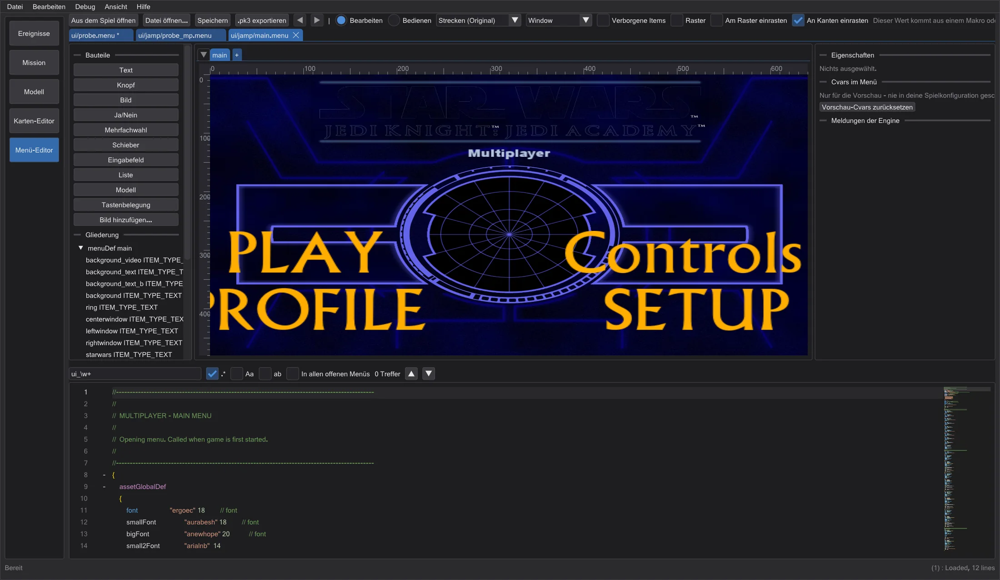
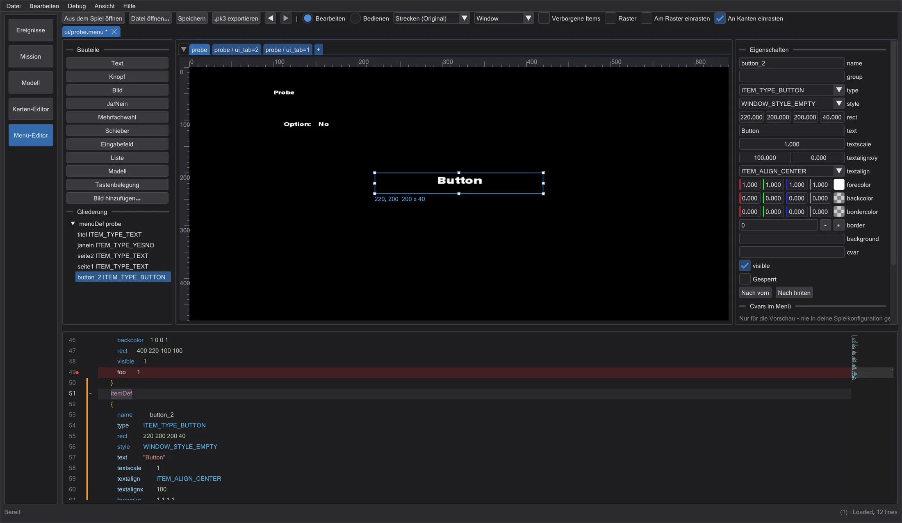
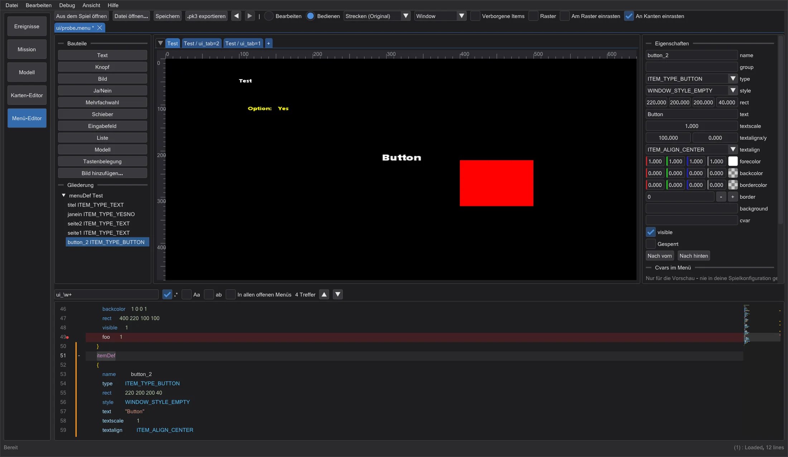
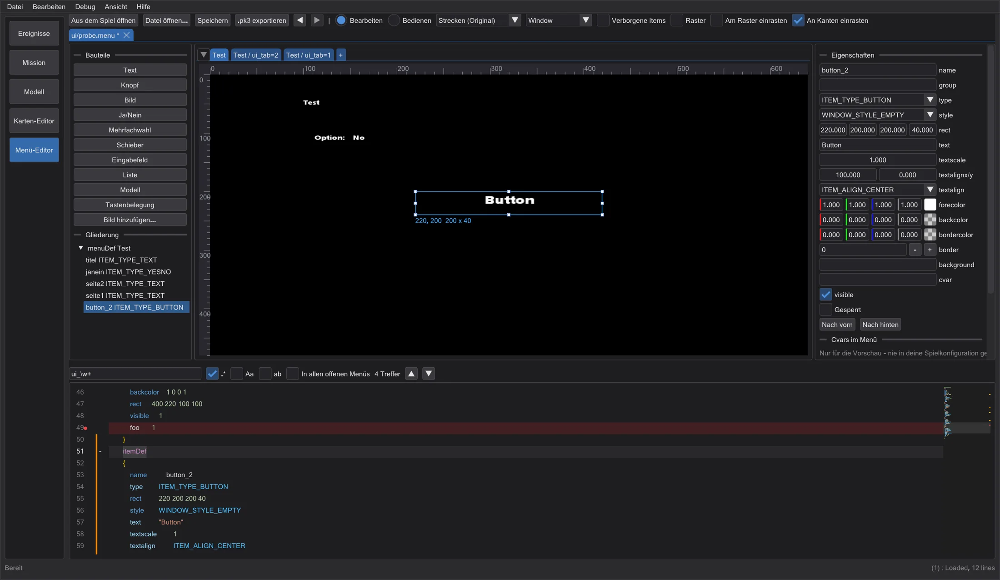

Menü-Editor
Die Menüs des Spiels (.menu) gleichzeitig als Text und auf einer 640x480-Fläche bearbeiten - gelesen, gezeichnet und bedient wie im Spiel.
Ein Menü öffnen#
Klicke Menü-Editor in der Modusleiste. Aus dem Spiel öffnen listet jedes ui/-Menü des eingerichteten Spiels (aus den .pk3 gelesen, nie verändert); Datei öffnen oder eine abgelegte Datei öffnet eines von der Platte. Der Pfad bestimmt, wie die Datei gelesen wird, genau wie im Spiel: ui/jamp/, ui/jk2mp/ und ui/MD_MP/ mit dem Mehrspieler-Präprozessor (#include, #define, Makros, menudef.h), alles andere wie im Einzelspieler.
Meldungen der Engine zeigt, was das Spiel beim Laden der Datei ausgeben würde, im Wortlaut und mit Zeile (etwa Unknown item keyword 'foo' Line #21). Ein Klick springt zur Zeile; der Code-Editor markiert sie rot.
Fläche und Seiten#

Jeder menuDef der Datei ist ein Reiter über der Fläche; Items, die ein Cvar mit mehreren Werten zeigt (cvarTest + showCvar, wie ui_tab-Seiten), bekommen je Wert einen Reiter. + fügt einen neuen menuDef an. Die Fläche ist der virtuelle 640x480-Bildschirm des Spiels: Strecken (Original) wie das Originalspiel, 4:3 mit Balken und feste Auflösungen, um das Seitenverhältnis zu prüfen.
- Klick wählt (Umschalt/Strg fügt hinzu), Ziehen verschiebt, die weißen Griffe ändern die Größe. Im Text ändern sich nur die Zahlen von
rect- Kommentare und Einrückung bleiben. - An Kanten einrasten rastet an Kanten und Mitten der anderen Items, des Bildschirms und deiner Hilfslinien ein (aus den Linealen ziehen); Am Raster einrasten am Raster. Alt schaltet das Einrasten beim Ziehen ab, Umschalt hält die Richtung. Pfeiltasten verschieben um 1, mit Umschalt um 10.
- Bauteile fügt neue Items ein (Text, Knopf, Bild, Ja/Nein, Mehrfachwahl, Schieber, Eingabefeld, Liste, Modell, Tastenbelegung) - ans Ende des
menuDefder Seite. Bild hinzufügen nimmt ein PNG, JPG oder TGA alsgfx/menus/<name>; beim Export kommt es in die .pk3. - Eigenschaften bearbeitet das gewählte Item; bei mehreren richtet es aus, verteilt und gruppiert. Nach vorn/Nach hinten ändern die Zeichenreihenfolge (das Spiel zeichnet in Dateireihenfolge). Gesperrt hält ein Item fest.
Bedienen und Cvars#

Bedienen führt das Menü wie das Spiel aus: Darüberfahren gibt den Fokus (mouseEnter, onFocus), ein Klick führt die action des Items aus, Ja/Nein, Mehrfachwahl und Schieber ändern ihren Cvar, und open, close, show, hide, setfocus, setcvar, setitemtext, transition ... wirken wie in ui_shared. Was das Spiel braucht (Klänge, exec, uiScript), erscheint im Skriptprotokoll.
Cvars im Menü listet jeden Cvar, den das Menü liest oder setzt, die für die Sichtbarkeit zuerst, mit den vorkommenden Werten. Ändere sie, um andere Zustände zu sehen. Sie gelten nur in der Vorschau - deine Spielkonfiguration wird nie angefasst.
Code-Editor#

ui_tab zeigt den roten Kasten, ein Klick auf Ja/Nein ändert ui_probe.| Strg + F / Ctrl + H | Suchen / Ersetzen (Regex, Groß/Klein, ganzes Wort, alle offenen Menüs); Treffer stehen in der Minimap |
| Strg + D / Ctrl + Umschalt + L / Alt + Click | nächstes Vorkommen / alle Vorkommen / weiterer Cursor (Mehrfachcursor) |
| Strg + Leertaste | Vervollständigung: Schlüsselwörter, Cvars, Itemnamen, Shader-Pfade, @MENUS-Texte |
| F12 / Ctrl + Click | zum menuDef oder itemDef des Namens unter dem Cursor |
| Strg + F2 / F2 / Shift + F2 | Lesezeichen wie im Skript-Editor (auch Klick in den Rand) |
| Strg + / , Tab / Shift + Tab | Zeilen auskommentieren, ein-/ausrücken |
Der Rand arbeitet wie im Skript-Editor: orange = seit dem Speichern geändert, grün = geändert und gespeichert, blau = wieder wie beim Öffnen. menuDef, itemDef und Skriptblöcke falten mit dem +/- neben den Zeilennummern. Ein Klick auf ein Item der Fläche springt zu seinem itemDef, und der Cursor in einem itemDef wählt das Item.

Speichern und Export#
Speichern schreibt den Text genau so, wie er im Editor steht; eine Datei aus dem Spiel wird woanders gespeichert. .pk3 exportieren packt das Menü unter seinem Spielpfad und deine Bilder in eine .pk3. Beides schreibt nie in die Spielordner.